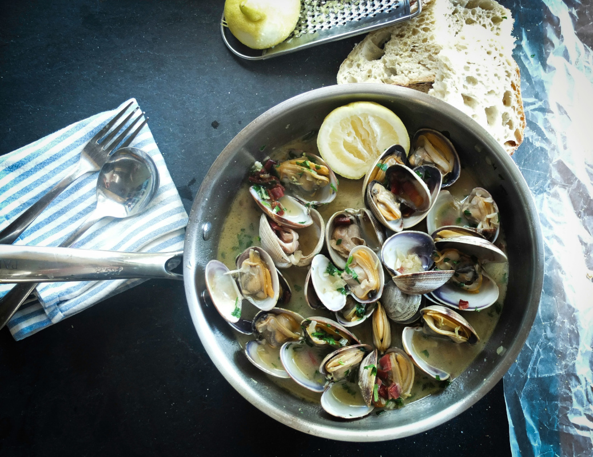

Menu
APPETIZERS
- REWENA BREAD 10
- Traditional Māori bread.
- PAUA FRITTER 16
- Finely diced pieces of paua, served with a side salad and horopito dressing.
- RAW FISH 20
- Dried snapper fish marinated in coconut cream, served with tomatoes and spring onions.
- POACHED SALMON 22
- Salmon poached in an orange and pistachio glaze, served with rewena bread
- SEAFOOD BASKET 25
- Crumbed musssels, salt and pepper squid, crumbed hoki bites and garlic prawns

MAIN
- FISH OF THE DAY 25
- Beer-battered fish and kumara fries, served with a side salad and homemade tartare.
- MUSSELS AND SCALLOPS 25
- Steamed mussels & scallop mousse, honey and soy broth.
- SEAFOOD CHOWDER 30
- Creamy chowder filled with tarakihi, prawn, hoki, scallops and mussles, served with flatbread.
- PORK BELLY 30
- Slow-cooked pork belly served on a bed of apples slaw with roasted kumara and crispy noodles.
- LAMB STEAK 33
- New Zealand lamb coated in a kawakawa crumb, served with Dijon-mustard-glazed carrots, roasted butternut squash and mushroom jus.
- VENISON 33
- Venison crusted with Horopito, served with glazed plums, cabbage salad and red wine jus.
DESSERT
- KAPITI ICE CREAM 10
- Check for daily specials
- STEAMED PUDDING 12
- Golden-syrup-flavoured steamed pudding, served with vanilla ice cream.
- MINI PAVLOVA 16
- Mini pavlova, served with kawakawa and lemon-infused cream and fresh fruit
- BANOFFEE PIE 16
- Toffee, fresh bananas and fresh cream
BEVERAGES
RED B/G
- Terrace Edge Pinot Noir, 2012, Wairarapa 53/13
- Altitude Pinot Noir, 2010, Marlborough 64/15
- Greystone Pinot Noir, 2012, Wairarapa 73/17
- Terrace Edge Syrah, 2010, Wairarapa 53/13
- Altitude Syrah, 2010, Marlborough 64/15
- Greystone Syrah, 2012, Wairarapa 73/17
- Pegasus Bay Merlot, 2013, Waipara 65/14
- Pegasus Bay Pinot Noir, 2013, Waipara 110
WHITE
- Spade Oak Pinot Gris, 2011, Gisborne 40/10
- Maude Pinot Gris, 2017, Otago 49.50/11
- Charles Wiffen Chardonnay, 2013, Otago 48/11
- Amisfield Riesling, 2016, Otago 53/12
- Lamont Riesling, 2010, Otago 57/13
- Elephant Hill Viognier, 2013, Hawke's Bay 55/12
- Folium Sauvignon Blanc, 2011, Marlborough 52/11
- Billecart-Salmon Brut Reserve, France 120
BEER AND CIDER
- Garage project range 11
- Tuatara range 11
- Panhead range 10
- Coopers ale 10
- Heineken 11
- Moa cider 10
- Crooked cider 10
NON-ALCOHOLIC
- Mineral water 4.00
- Soft drinks 4.00
- Juice 4.00
- Coffee 4.50
- Tea 3.50